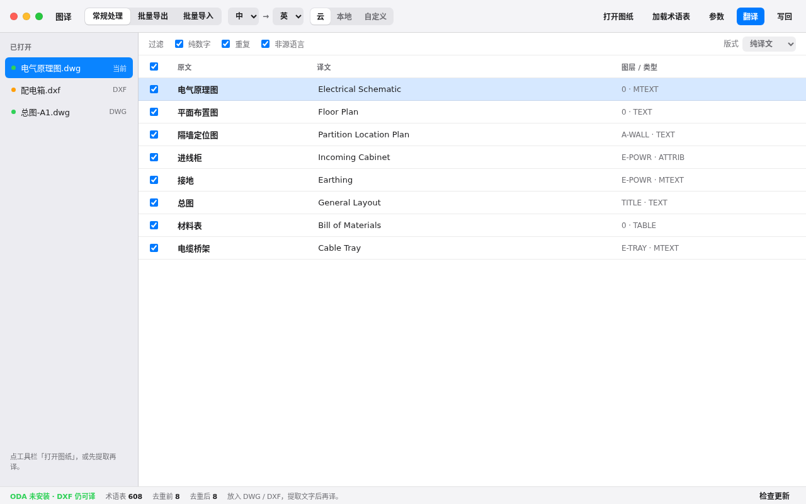
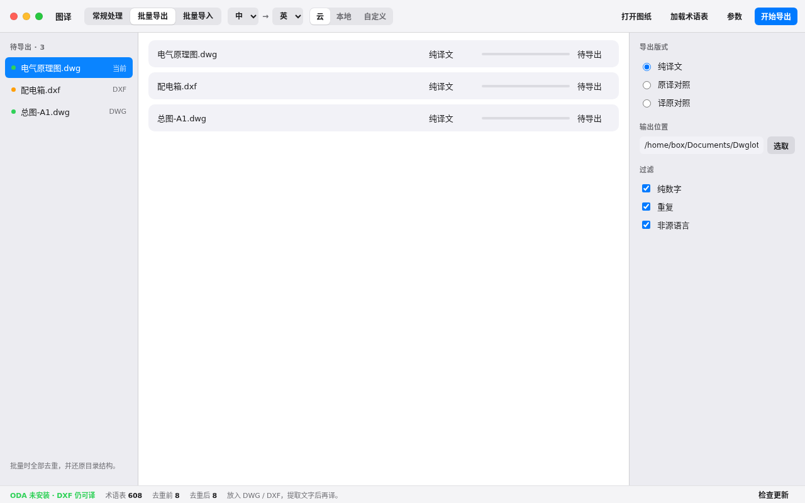

图译 Dwglot 做图纸翻译。打开图纸，译文字，写回。不装 AutoCAD。

TEXT / MTEXT / 属性。术语表先匹配，再走云、本地或自定义引擎。
左侧已打开图纸。中间原文 | 译文 | 图层。云 / 本地 / 自定义是分段控件，不是商店。ODA 你自己装；没装也能译 DXF。

Mac：Control-点图标 → 打开，或系统设置 → 隐私与安全性 → 仍要打开。Windows：更多信息 → 仍要运行。证书以后会消掉这层。
打开 ReleasesCAD_ODA_EXEC 或按系统路径检测。